The Medium is the Message (sixspace)
From The Giant: The Definitive Obey Giant Site
| 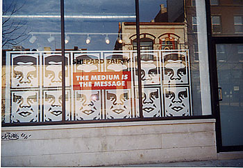 |
{kind=link}
The Medium is the Message was a Shepard Fairey gallery show that ran at sixspace from October 8 to October 31, 1999.
Shepard Fairey :: The Medium is the Message October 8 - 31, 1999
sixspace is pleased to announce the first Chicago showing of screenprints by Andre the Giant has a Posse founder, Shepard Fairey. THE MEDIUM IS THE MESSAGE opens October 8,1999 with a reception from 6-10 pm and runs through October 31,1999.
Chances are you have seen the sticker featuring the unmistakable mug of the pro-wrestler great, Andre the Giant, that launched Fairey's career on bus signs, bus stops, lamp posts, or store windows. You may have even caught a glimpse of the Andre the Giant has a Posse stickers or posters in movies such as 8mm, Batman Forever, or The Devil's Own. You've seen it, but have you become aware of it?
Andre the Giant has a Posse is literally all over the world. What began in 1989 as a joke between skateboarders while Fairey was a student at the Rhode Island School of Design has now distributed over one million stickers worldwide, made 15,000 posters, and has been supported by bands such as The Jon Spencer Blues Explosion and the Fuggees. Art shows of Fairey's work have included the Alleged Gallery, NYC, The New Museum of Contemporary Art, NYC, Santa Barbara Contemporary Art Forum with numerous shows in New York City, Baltimore, Rhode Island, Philadelphia, and throughout California...now he's coming to Chicago!
Although seemingly simple, Shepard Fairey's work has many facets. One is the worldwide success of such a sticker with a ridiculous subject matter. Fairey explains this as phenomenology or, as Heidegger describes, "the process of letting things manifest themselves." Two, his work is popular because we want it to be. He put his work into our hands-we put up the stickers, the posters, buy the limited editions prints, love the story. We are a part of it. It's us he's trying to reach. Therefore, three, he wants us to be more aware of our surroundings; to take as much notice to the advertisements on buses and billboards as you do the mysterious Andre the Giant posters. As a society we are constantly bombarded with images and we don't have a choice in the matter. Obey.
But what does it mean? Surprisingly is doesn't really mean anything. Through the public's need for understanding (as well as the artworld's)we create a meaning behind it. Fairey plays along by creating more political images providing the viewer with a much more serious point of reference. He uses image of Big Brother, Che Guevara, and implements the word OBEY. Adam Wallacavage from Juxtapoz Art Magazine says, "Andre may reveal Fairey's hopeless attraction to what he calls 'the power of propaganda,' but like a Rorshach he's been staring at for nine years straight, its generalized abstraction has become a halluncinatory screen of projected desire, a totem artifact that spits out a relentless stream of fragmentary and disjointed insights, impressions, and innuendoes regarding the deeper, darker aspects of our social psyche." We have to connect a meaning with an image. As Fairey states in his manifesto,"Because Andre the Giant Has a Posse has no actual meaning, the various reactions and interpretations of those who view it reflect their personality and the nature of their sensibilities."
So what started out as a joke, then cult phenomenon, then art show (with global domination not far behind) has now assulted both society and the artword. In the vane of Barbara Krueger and Sherry Levine, Fairey has utilized pop images with strong text in the public's sphere to convey how we are all being manipulated by signs.
Discover the many layers of Shepard Fairey's work at sixspace, located at xxxx West Chicago Ave. THE MEDIUM IS THE MESSAGE runs October 8th through October 31,1999, Opening reception is Friday, October 8th from 6-10pm. For additional information on Shepard Fairey as well as upcoming exhibitions please contact Caryn Coleman at 312.xxx.xxxx. Support the Posse.
For more information on Shepard Fairey you can also check out www.OBEYGIANT.com
Official sixspace images from The Medium is the Message:
| 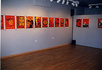 | 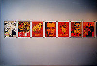 | 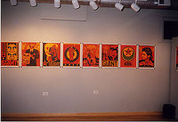 |
{kind=link}
{kind=link}
{kind=link}
| 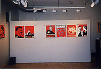 | 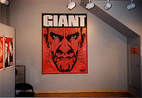 | 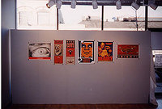 |
{kind=link}
{kind=link}
{kind=link}
| 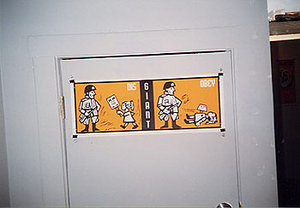 | 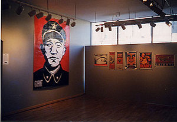 |
{kind=link}
{kind=link}
| 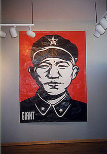 | 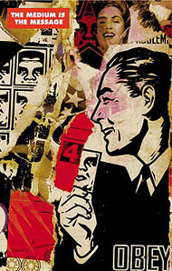 | 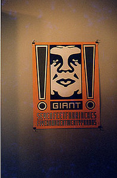 |
{kind=link}
{kind=link}
{kind=link}
© Copyright |
|---|
| This page contains an image or images of drawings, paintings, photographs, prints, or other two-dimensional works of art, for which the copyright is presumably owned by either the artist who produced the image, the person who commissioned the work, or the heirs thereof. It is believed that the use of low-resolution images of works of art for critical commentary on the work in question, the artistic genre or technique of the work of art, or the school to which the artist belongs on the English-language website thegiant.org, hosted on servers in the United States, qualifies as fair use under United States copyright law. |